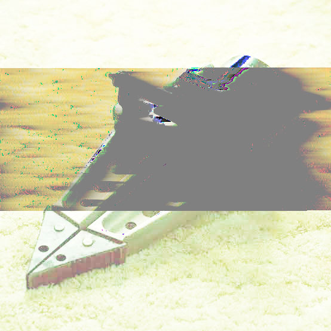

Glitch Art
2026
Medium / Tools: Text Editor Databending, Audacity
This project explores post-hardcore and alternative rock music
through digital glitching. I used album artwork from Deftones
and Pierce the Veil and experimented with text-editor databending
and Audacity audio processing. The glitches translate the raw,
aggressive sound of the music into visual distortion and digital
noise. Chance also became part of the process because changing
the files could create unpredictable results.
